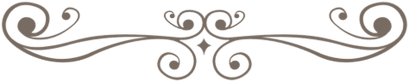

De haas moest altijd lachen wanneer hij de schildpad zag lopen, want het ging zo langzaam. "Ik begrijp niet waarom jij nooit naar iets onderweg gaat," zij hij pesterig. "Als jij eindelijk aankomt, is het altijd te laat en alles is al lang voorbij."
De schildpad lachte een beetje. Vlug ben ik niet,"" zei hij, "maar toch durf ik te wedden, dat ik eerder aan de overkant van dit veld ben dan jij. Zullen we een wedstrijd houden? Dan kun je het zien."
"Goed!" riep de haas en meteen sprong hij er vandoor, zo snel als hij kon. De schildpad ging heel rustig op weg.
Nu was het die dag erg warm weer met een brandende zon, en de haas werd halverwege moe en slaperig. "Weet je wat," dacht hij. "Ik doe even een tukje onder die heg hier. Zelfs als die schildpad me onderwijl voorbij loopt, heb ik hem in een flits weer ingehaald." De haas ging in de schaduw liggen en sliep in.
De schildpad kroop gestaag voort onder de warme zon. Pas na lange tijd werd de haas wakker. Het was veel later dan hij dacht en hij keek eens rond. Geen schildpad te bekennen. "Nou nou," mompelde hij, "waar zit dat vriendje? Wacht maar, ik zal hem eens wat laten zien."
Als een pijl uit een boog schoot hij weg, door het korte gras, door het koren, over sloten, langs braamstruiken, en bij de laatste bocht bleef hij even staan om te zien waar de eindstreep lag. Daar! En nog geen halve meter ervoor kroop de schildpad, langzaam maar zeker, stap voor stap, dichter en dichter naar het eindpunt.
Met een geweldige sprong stoof de haas erop af. Maar hij was te laat. Toen hij de lijn passeerde, was de schildpad hem juist voor geweest.
"Zie je nou wel," zei de schildpad. Maar de haas had geen adem meer om te kunnen antwoorden.
- Einde -